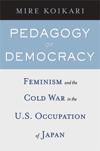

A new look at democratization, women�s rights, and the Cold War in post-World War II U.S.-occupied Japan
A new look at democratization, women�s rights, and the Cold War in post-World War II U.S.-occupied Japan


 A new look at democratization, women�s rights, and the Cold War in post-World War II U.S.-occupied Japan
A new look at democratization, women�s rights, and the Cold War in post-World War II U.S.-occupied Japan

|  |
Pedagogy of DemocracyFeminism and the Cold War in the U.S. Occupation of JapanMire Koikaripaper EAN: 978-1-59213-701-5 (ISBN: 1592137016) |
"The postwar history of Japan is just beginning to be written, and Pedagogy of Democracy examines a formative period---the U.S. Occupation, 1945-52. Koikari examines the Occupation as a raced, gendered, and classed endeavor in the larger context of the Cold War. Her fresh perspective makes this a significant book for those interested in Japanese women's history and Japanese history in general."
—Kathleen Uno, Associate Professor of History at Temple University, and author of Passages to Modernity: Motherhood, Childhood, and Social Reform in Early Twentieth Century Japan
Pedagogy of Democracy re-interprets the U.S. occupation of Japan from 1945 to 1952 as a problematic instance of Cold War feminist mobilization rather than a successful democratization of Japanese women as previously argued. By combining three fields of research�occupation, Cold War, and postcolonial feminist studies�and examining occupation records and other archival sources, Koikari argues that postwar gender reform was part of the Cold War containment strategies that undermined rather than promoted women�s political and economic rights.
Koikari suggests that American and Japanese women leaders both participated in as well as resisted the ruling dynamics of race, gender, class, sexuality, and nation. Thus, Pedagogy of Democracy sheds new light on the complex and contradictory implications of Western feminist interventions in Asia.
By applying a postcolonial feminist framework to American gender reform in the Cold War Asia-Pacific context�a subject hitherto understudied among feminist scholars�Pedagogy of Democracy reveals both the similarities and the differences between imperial feminisms in the nineteenth and twentieth centuries.
Excerpt available at www.temple.edu/tempress
"Just when one thought the occupation of Japan had been thoroughly covered, along comes this excellent study.... Koikari presents her evidence with verve and flair, clarity and even drama (the chapter on Beate Sirota Gordon is remarkable, fascinating and spellbinding). She handles the full complexity of her analyses with outstanding research presented in accessible prose.... Highly recommended."
— Choice
"Focusing on the intersections of race, class, gender, and sexuality, Koikari reexamines and, she asserts, rewrites postwar occupation studies, Cold War cultural studies, and feminist colonial and postcolonial studies. She argues convincingly that Japanese women were a central concern for U.S. and Japanese occupation policy makers, for Japanese and American feminists, and for Japanese leftists.... Koikari debunks various myths about the 'masculinized and virile' American emancipation of 'victimized and passive' Japanese women, as she restores subjectivity to several populations in Japan: middle-class feminists, union organizers and Communist activists, and working women and occupation-era prostitutes."
— The Journal of American History
"[Koikari] draws on recent studies of the Cold War and on postcolonial and feminist theoretical perspective, and thus is able to paint a complex picture of the gendered, classed, racialized, and sexualized dynamics of the occupation.... Thanks to such studies as Koikari's we are able to discover a more complex picture of the Allied occupation of Japan, and there is now the potential to link this specific period of Asia-Pacific history with other colonial situations and sites of military occupation."
—The American Historical Review
"Koikari shows persuasively that hierarchies and differences among women and men, and the bridges built over these differences, shaped the occupation of America's cold war status."
—Contemporary Sociology
"Koikari has done a remarkable job in Pedagogy of Democracy: Feminism and the Cold War in the US Occupation of Japan of shedding new light on what might appear at first glance to be a familiar subject. By taking a critical feminist perspective with one eye on the nationalist and imperialist trends within Japan and another eye on the emerging structure of bipolar Cold War conflict, and combining this approach with extensive archival work, Koikari has presented a highly readable and fresh perspective on the US Occupation of Japan�. [T]his book will deservedly command a wide interdisciplinary audience amongst researchers with interests ranging from Japanese Studies to Postcolonial Studies, History to Gender Studies. Koikari is also to be congratulated for breathing new life into a well-established field."
— Gender & History
"Pedagogy of Democracy should be essential reading for anyone interested in women and gender in relation to U.S.�Japan relations, cold war politics, and U.S. military occupation. Koikari�s discussion of the complex nexus of gender, race, class, sexuality, nation, and empire in the U.S. occupation of Japan is an important contribution to the field of Women�s Studies and will be useful in a wide range of classes and contexts."
— Feminist Formations
Acknowledgements
Note on Japanese Names
1. Introduction: Recasting Women in the U.S. Occupation of Japan
2. Feminism, Nationalisn, and Colonial Genealogies: Women's Enfranchisement and Constitutional Revision
3. Feminism, Domestic Containment, and Cold War Citizenry
4. Women, the Cold War, and the Question of Resistance
5. Making the Body Respectable: Cold War Containment and Regulation of Sexuality
6. Conclusion
Notes
Bibliography
Index
 | Mire Koikari is an Associate Professor in the Women�s Studies Program at the University of Hawai'i at Manoa. |
Women's Studies
History
American Studies
© 2015 Temple University. All Rights Reserved. This page: http://www.temple.edu/tempress/titles/1935_reg.html.